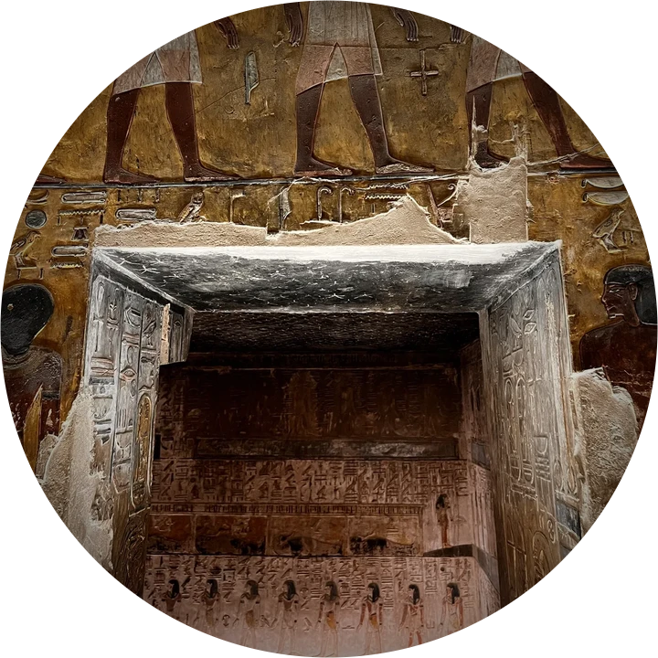

Templo de Amon
No Egito antigo, quem tinha uma dúvida ia ao templo à noite consultar o deus. Atravesse o escuro e leve a sua pergunta.
Está escuro. Arraste a tocha pela parede e procure a passagem.
Diante do santuário
Pense numa pergunta ou num tema da sua vida, com o coração, e diga baixinho, só para você. A roda dos doze deuses vai parar diante de quem tem algo a te dizer.
Ninguém lê a sua pergunta. Ela não fica guardada.
A Roda dos 12 Deuses

Pense na sua pergunta, segure o botão enquanto se concentra e solte quando sentir que é a hora.
Toque na bolsa três vezes. Cada amuleto que sair fala de um tempo.
Os egípcios não tinham um único deus para tudo: cada neter cuidava de uma parte da vida. Rá do recomeço, Thoth da palavra, Ísis do cuidado, Maat do equilíbrio. Consultar um deus no templo era comum: a estátua saía em procissão e respondia às perguntas do povo.
No centro da roda está o disco do teto do templo de Dendera, que você vai ver na viagem. Girar a roda e deixar que ela pare num deus é um jeito nosso de conversar com eles.
Os amuletos eram usados por vivos e mortos para proteção. Tirá-los de uma bolsa para ler o caminho também é um jeito nosso de conversar com eles.